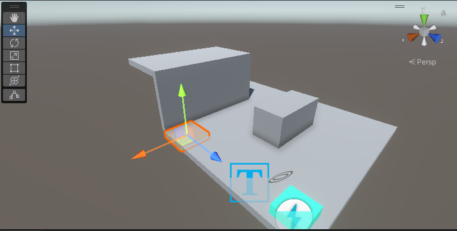

ELIAS WILLERUP

Cat owners! Has your cat ever pushed a glass of water off your counter for no reason? It's probably made you wonder what it's like inside the feline's head. This is what I wanted to capture in my game Catmageddon VR.
Catmageddon VR is a game I made for a large assignment at Boise State University. In the GIMM program we were assigned to make a VR game of our own choice, and to do almost everything from scratch, including models, programming, animation, etc. (except the engine. I chose Unity)
The name of the project file is "Home Invasion." Upon its conception it was a totally different game. My early game design document describes a top-down home defense game where the player must defend their house against an attacker using various makeshift tools.
My first prototype was a first-person game complete with house and throwable objects. I was quite proud of a script I wrote to make object impact sounds louder the harder they hit. It had source engine style pick up mechanics and
Play Catmageddon on Itch.io